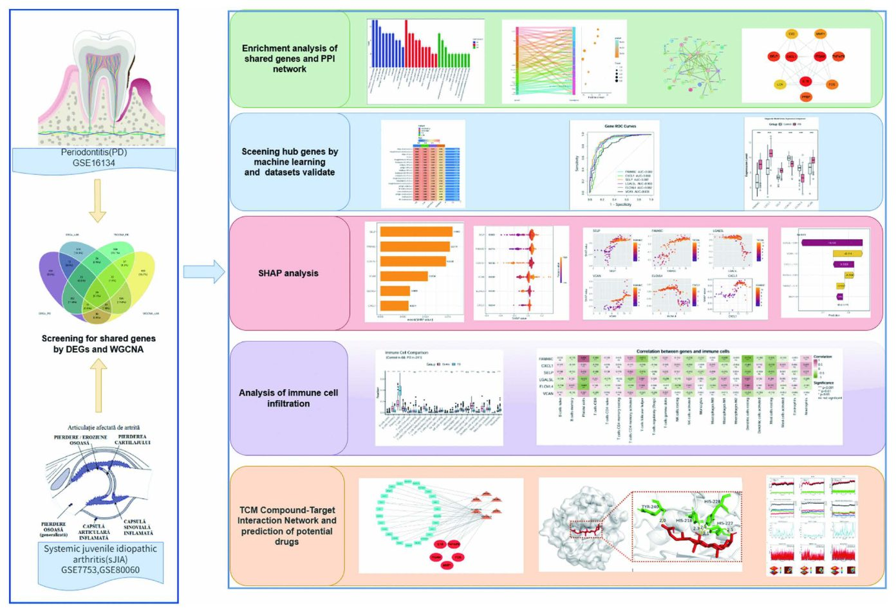
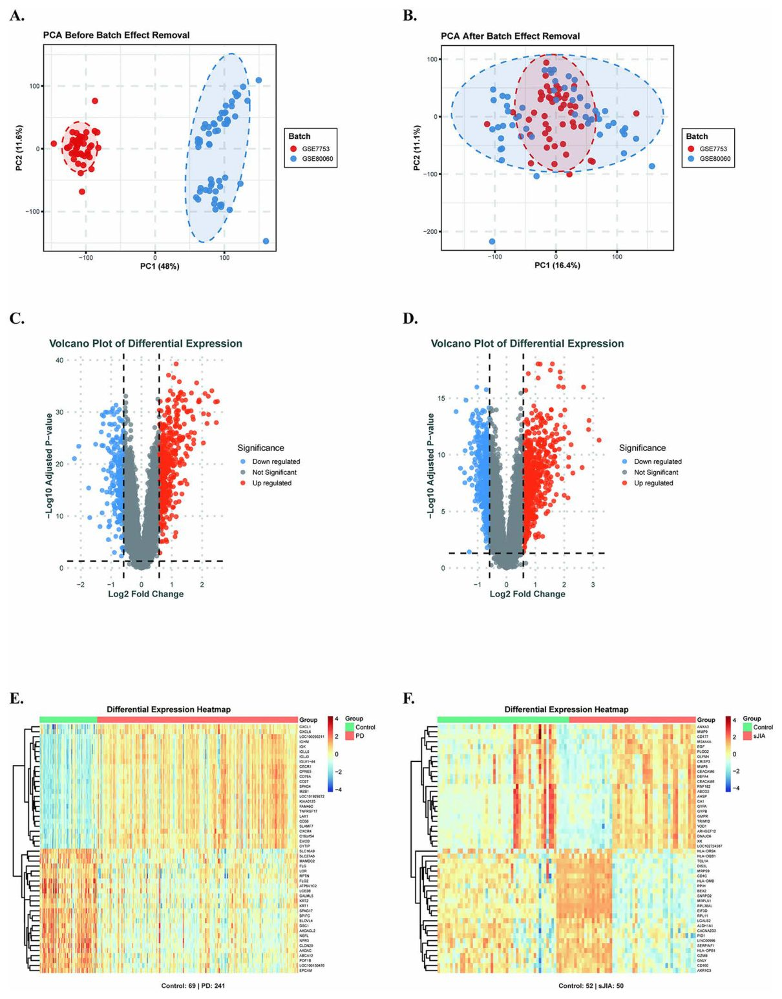
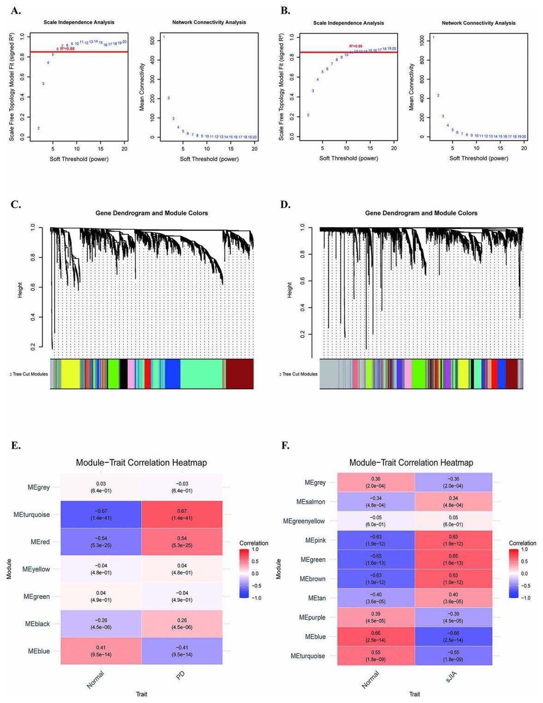
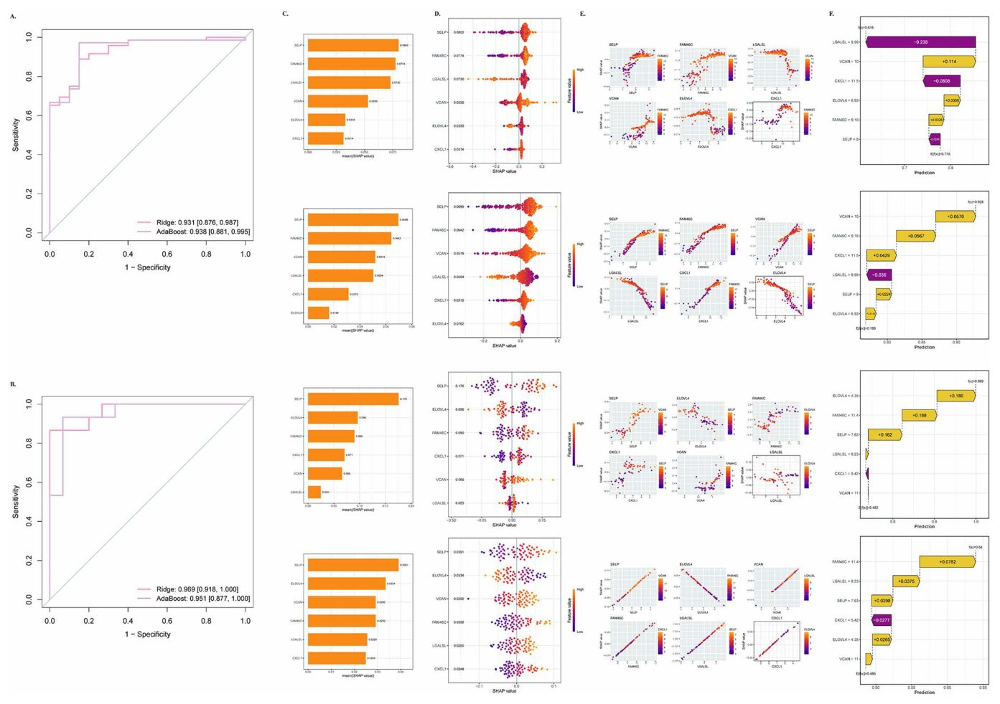
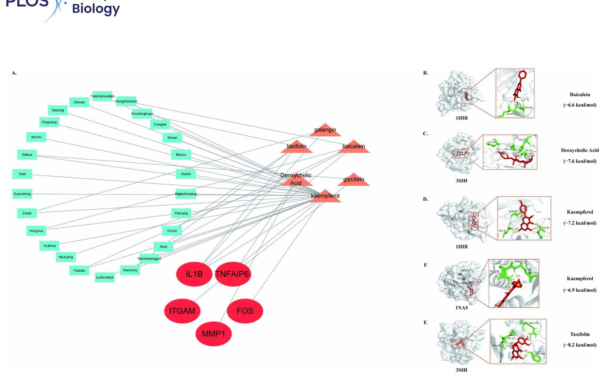

Milk kasalliklari va artrit: genetik bog‘liqlik siri


Parodontit va tizimli yoshlar idiopatik artriti (sJIA) o‘rtasidagi bog‘liqlik uzoq vaqtdan beri kuzatilgan, ammo uning molekulyar asosi noma’lum edi. Olimlar genetik ma’lumotlarni tahlil qilib, ikkala kasallik uchun umumiy bo‘lgan 37 ta genni topishdi. SELP geni ushbu kasalliklarni erta tashxislashda muhim biomarker bo‘lishi mumkin.
Asosiysi
- IL-17 va NF-κB yo‘llarida ishtirok etuvchi 37 ta umumiy gen aniqlandi.
- SELP geni ikkala kasallik uchun eng barqaror diagnostik marker deb topildi.
- Kemferolning IL1B va ITGAM oqsillari bilan bog‘lanishi tasdiqlandi.
Batafsil
Tadqiqotda GEO ma’lumotlar bazasidan olingan genetik ifoda ma’lumotlari va 175 ta mashinali o‘qitish (machine learning) modellari qo‘llanildi. Ridge va AdaBoost ansambl modeli eng yuqori aniqlikni ko‘rsatdi. Aniqlangan genlar, xususan SELP va CXCL1, IL-17 va NF-κB kabi yallig‘lanish yo‘llarida faol ishtirok etishi tasdiqlandi.
Molekulyar dokin va 100 nanosekundalik dinamik modellashtirish yordamida MMP1, IL1B va ITGAM kabi oqsillar uchun potentsial dori vositalari sinab ko‘rildi. Natijalar shuni ko‘rsatadiki, kemferol va dezoksixol kislotasi ushbu yallig‘lanish jarayonlariga ta’sir ko‘rsatishi mumkin. Bu topilmalar kelajakda har ikki kasallikni davolash uchun yangi yondashuvlarni ishlab chiqishga xizmat qiladi.
Cheklovlar
Tadqiqot bioinformatik tahlilga asoslangan bo‘lib, klinik tajribalar bilan tasdiqlanishi kerak.
Maqolaning to'liq tarjimasi
Annotatsiya
Periodontit (PD) va tizimli yuvenil idiopatik artrit (sJIA) potentsial klinik bog'liqliklarga ega surunkali yallig'lanish kasalliklari hisoblanadi, ammo ularning umumiy molekulyar mexanizmlari hanuzgacha noaniq — JIA bilan og'rigan bemorlarda periodontit xavfi yuqori, JIAda zararlanadigan chakka-pastki jag' bo'g'imi PD bilan umumiy yallig'lanish yo'llariga ega, Th17 hujayralari ikkala holatni ham qo'zg'atadi va glyukokortikoid terapiyasi periodontal zaiflikni kuchaytirishi mumkin. Ushbu tadqiqot GEO ma'lumotlar bazasidagi gen ekspressiyasi ma'lumotlaridan foydalangan holda PD va sJIA ning umumiy mexanizmlari va potentsial terapevtik nishonlarini o'rganishga qaratilgan bo'lib, differentsial ekspressiya genlari tahlili, vaznlangan gen ko-ekspressiya tarmog'i tahlili (WGCNA), funktsional boyitish tahlili, oqsil-oqsil o'zaro ta'sir tarmog'ini qurish va 175 ta bashoratli model bo'yicha mashinali o'qitishni o'z ichiga olgan kompleks bioinformatik tahlillar amalga oshirildi, bunda Ridge + AdaBoost kombinatsiyasi eng yaxshi natijani ko'rsatdi. Keyinchalik modelni talqin qilish uchun SHapley Additive exPlanations (SHAP), immun infiltratsiyasini baholash uchun CIBERSORT va terapevtik nishonlarni tasdiqlash uchun 100-ns molekulyar dinamika simulyatsiyalari bilan molekulyar dokinq qo'llanildi. Biz PD va sJIA o'rtasida 37 ta umumiy nomzod genlarni aniqladik, ular IL-17, NF-κB, revmatoid artrit va lipid ateroskleroz yo'llarida sezilarli darajada boyitilgan. Mashinali o'qitish skriningi oltita asosiy diagnostik genni (FAM46C, CXCL1, SELP, LGALSL, ELOVL4, VCAN) tanlab oldi, bunda SELP turli modellar va ma'lumotlar to'plamlarida eng barqaror diagnostik qiymatni (AUC > 0,8) ko'rsatdi; SHAP tahlili SELP ni barcha modellarda barqaror xavfni boshqaruvchi bashoratchi sifatida tasdiqladi, CXCL1 esa doimiy ravishda himoya ta'sirini ko'rsatdi. Immun infiltratsiyasi neytrofillarning ko'payishi va CD8⁺ T-hujayralarining kamayishini, shuningdek, CXCL1 va SELP ning neytrofillar va tinch holatdagi semiz hujayralar bilan, FAM46C ning esa plazmatik hujayralar bilan konservalangan korrelyatsiyasini aniqladi. Dori-nishon tarmog'i tahlili IL1B, MMP1 va ITGAM ni asosiy nishonlar sifatida belgiladi va molekulyar dokinq deoksixolat kislotasi–MMP1 (-7,6 kkal/mol), kempferol–IL1B (-7,2 kkal/mol), kempferol–ITGAM (-6,9 kkal/mol) uchun kuchli bog'lanish yaqinligini ko'rsatdi, MD simulyatsiyalari esa barqaror va o'ziga xos bog'lanishni tasdiqladi. Umuman olganda, ushbu tadqiqot PD va sJIA o'rtasidagi umumiy genetik va immunologik xususiyatlarni o'rganadi, SELP kasalliklararo muhim diagnostik biomarker bo'lib xizmat qilishi mumkinligini taklif qiladi va ularning patogenezi hamda keyingi eksperimental tekshiruvni talab qiladigan potentsial terapevtik nishonlari haqida yangi tushunchalarni taqdim etadi.
Muhim
Tadqiqot PD va sJIA uchun 37 ta umumiy genni aniqladi, SELP (AUC > 0,8) eng ishonchli diagnostik marker, IL1B, MMP1 va ITGAM esa istiqbolli terapevtik nishonlar deb topildi. [!tip] WGCNA — o'xshash ekspressiya namunalariga ega genlarni guruhlash usuli, SHAP esa mashinali o'qitish modellarining qarorlarini tushuntirish uchun har bir omilning yakuniy bashoratga qo'shgan hissasini ko'rsatadigan vositadir.
Periodontit, og'iz bo'shlig'ining keng tarqalgan kasalligi va tizimli yuvenil idiopatik artrit, bolalardagi kam uchraydigan otoimmun holat klinik jihatdan bog'liq, ammo ularning umumiy molekulyar asosi noaniq qolmoqda. Har bir kasallik bilan og'rigan bemorlarning gen ekspressiyasi ma'lumotlarini tarmoqqa asoslangan va mashinali o'qitish yondashuvlari yordamida tahlil qilib, biz ikkala holatda ham o'zgaradigan 37 ta genni aniqladik. Ular orasida biz SELP ni umumiy diagnostik marker uchun eng kuchli nomzod sifatida belgiladik. Shuningdek, biz ikkala kasallik ham neytrofillar darajasining oshishi va CD8⁺ T-hujayralarining kamayishi bilan bog'liqligini aniqladik va ushbu kasalliklarni qo'zg'atuvchi asosiy oqsillar bilan bog'lanishi mumkin bo'lgan bir nechta tabiiy birikmalarni aniqladik. Bizning topilmalarimiz ushbu ikki, bir qarashda turlicha bo'lgan holatlar molekulyar darajada qanday bog'liq bo'lishi mumkinligini tushunish uchun asos yaratadi va SELP hamda boshqa genlarni kelajakdagi diagnostika yoki terapiya uchun potentsial nishonlar sifatida ta'kidlaydi. Biroq, bular bemorlarga yordam ko'rsatishda qo'llanilishidan oldin eksperimental va klinik tekshiruvni talab qiladigan hisoblash bashoratlari.
Ehtiyot bo'ling
Barcha natijalar bioinformatik modellashtirish usullari bilan olingan va laboratoriya tajribalari hamda klinik tadqiqotlarda majburiy tasdiqlanishi kerak.
Kirish
Periodontit (PD) — butun dunyo aholisi orasida keng tarqalgan holat. Uning tarqalish darajasi 11% deb baholanadi. PDning klinik ko‘rinishlari asosan bakterial infeksiya tufayli milk, periodontal to‘qimalar, alveolyar suyak va dentinning yemirilishi sifatida namoyon bo‘ladi. Kasallik etiologiyasi og‘iz bo‘shlig‘i bakteriyalari va organizmning immun tizimi o‘rtasidagi o‘zaro ta’sir natijasi bo‘lib, bu organizmning o‘z immun javobi vositasida yallig‘lanish va immun reaksiyalarga olib keladi. Mavjud dalillar PD va turli tizimli kasalliklar, jumladan, autoimmun buzilishlar o‘rtasidagi bog‘liqlikni ko‘rsatadi. Tizimli yuvenil idiopatik artrit (sJIA) — yuvenil idiopatik artritning (JIA) kam uchraydigan shakli bo‘lib, isitma, teri toshmalari va tizimli yallig‘lanish bilan tavsiflanadi; uning tarqalishi barcha JIA holatlarining 10% dan 20% gacha qismini tashkil etadi. Og‘iz bo‘shlig‘ining keng tarqalgan surunkali infeksion-yallig‘lanish kasalligi bo‘lgan periodontit autoimmun kasalliklar bilan bog‘liqligi sababli fanlararo tadqiqotlarda katta e’tibor qozongan. JIAning boshqa turlariga nisbatan, sJIAning tizimli yallig‘lanish bo‘roni uni JIAning boshqa turlari bilan o‘zaro ta’sir qilishida yanada o‘ziga xos qiladi.
Muhim
Periodontit aholining 11 foizida uchraydi va autoimmun patologiyalar bilan bog‘liq, sJIA esa JIA holatlarining 10–20 foizini tashkil etib, o‘ziga xos tizimli yallig‘lanish profiliga ega.
Tadqiqotlar shuni ko‘rsatdiki, JIA bilan og‘rigan bemorlarda milk va periodontal kasalliklarning og‘ir shakllari rivojlanish ehtimoli yuqoriroq. JIA holatlarida chakka-pastki jag‘ bo‘g‘imi (TMJ) ko‘pincha zararlanadi va JIA hamda periodontal kasallik o‘rtasida bog‘liqlik mavjud, bu ikki holatning klinik yallig‘lanish jarayonlarining o‘xshashligiga asoslanadi. Th17 hujayralari ko‘plab autoimmun kasalliklarda hal qiluvchi rol o‘ynaydi va ularning ajralib chiqishi PD rivojlanishiga hissa qo‘shadi, Th1/Th17/Th22 o‘qi bilan bog‘liq hujayralar esa chakka-pastki jag‘ bo‘g‘imi osteoartritida ishtirok etadi. Bundan tashqari, sJIA uchun davolash usullari immun tizimini tartibga solish yoki og‘iz bo‘shlig‘i mikromuhitini o‘zgartirish orqali og‘iz bo‘shlig‘i sog‘lig‘iga ta’sir qilishi mumkin. Masalan, glyukokortikoidlar (prednizolon kabi) odatda JIA ni davolash uchun ishlatiladi, ammo ularni uzoq muddat qo‘llash milkning haddan tashqari o‘sishiga va og‘iz bo‘shlig‘i bakteriyalari muvozanatining buzilishiga olib kelishi mumkin, bu esa periodontal kasallik xavfini oshiradi. Tadqiqotlar shuni ko‘rsatdiki, glyukokortikoidlarni uzoq vaqt qabul qiladigan bemorlarda milk kasalliklari rivojlanish ehtimoli 20% dan 30% gacha yuqoriroq. Biroq, bugungi kunga qadar PD va sJIA ni bog‘laydigan yetarli dalillar mavjud emas. Ushbu tadqiqotda PD va sJIA ning umumiy genetik omillarini aniqlash uchun GEO ma’lumotlar bazasidan olingan ma’lumotlarni tahlil qilishda bioinformatika usullari qo‘llanildi. Maqsad ushbu ikki kasallikni keltirib chiqaradigan genlarni, ularning immun xususiyatlarini va asosiy mexanizmlarini aniqlash edi. Bundan tashqari, biz har ikkala kasallik uchun potentsial terapevtik nishonlarni aniqlashga intildik. Umumiy ish jarayoni 1-rasmda keltirilgan.
Ma’lumotlar mavjudligi to‘g‘risidagi bayonot
Barcha tegishli ma’lumotlar qo‘lyozma va uning qo‘shimcha ma’lumotlar fayllarida keltirilgan. Ushbu tadqiqotda tahlil qilingan gen ekspressiyasi to‘plamlari Gene Expression Omnibus (GEO) ma’lumotlar bazasida [GSE16134, GSE10334, GSE80060, GSE7753, GSE8650] kirish raqamlari ostida ochiq foydalanish uchun mavjud. Moliyalashtirish: Ushbu ish Shinjon-Uyg‘ur avtonom rayoni Tabiiy fanlar jamg‘armasining yuqori darajadagi dasturi tomonidan qo‘llab-quvvatlangan (Grant № 2023D01C116). Moliyalashtiruvchilar tadqiqot dizayni, ma’lumotlarni yig‘ish va tahlil qilish, nashr etish to‘g‘risida qaror qabul qilish yoki qo‘lyozmani tayyorlashda hech qanday rol o‘ynamagan.
2. Natijalar 2.1. PD va sJIA o‘rtasidagi differensial ifodalangan genlarni identifikatsiya qilish
Partiya effektlarini yumshatish uchun biz GSE80060 va GSE7753 ma’lumotlar to‘plamlarini birlashtirdik va birlashtirish natijasida olingan gen ekspressiyasi matritsasini standartlashtirdik. Tarkibiy elementlarning PCA tahlili shuni ko‘rsatadiki, gomogenlikka ega ma’lumotlar yuqori darajadagi agregatsiyani namoyon qiladi (2A va 2B-rasm). Gen ekspressiyasidagi farqlarni tahlil qilish natijasida PD bilan bog‘liq 734 ta DEG aniqlandi, ulardan 491 tasi yuqori ekspressiyaga ega va 243 tasi past ekspressiyaga ega genlar bo‘lib, bu vulqon diagrammasida ko‘rsatilgan (2C-rasm). Issiqlik xaritasi eng muhim 25 ta DEG ni ajratib ko‘rsatadi va ham yuqori, ham past ekspressiyani namoyon qiladi (2E-rasm). Bundan tashqari, sJIA uchun kompleks skrining 1231 ta DEG ni aniqladi. Issiqlik xaritasi 685 ta yuqori ekspressiyaga ega va 546 ta past ekspressiyaga ega genlarning mavjudligini ko‘rsatadi (2D-rasm). Bundan tashqari, issiqlik xaritasi eng muhim 25 ta DEG ni ajratib ko‘rsatadi va ham yuqori, ham past ekspressiyani namoyon qiladi (2F-rasm).
Izoh
PCA (asosiy komponentlar tahlili) — ma’lumotlar hajmini kamaytirish va namunalar guruhlari o‘rtasidagi o‘xshashlikni vizuallashtirish uchun statistik usul, DEG esa kasallik va sog‘lom holatlar o‘rtasida faollik darajasi sezilarli darajada farq qiladigan genlardir.
2.2. PD va sJIA uchun vaznlangan genlar koekspressiya tarmog'i tahlili
WGCNA tahlili ham PD, ham sJIA ma'lumotlar to'plamini o'z ichiga olgan integratsiyalashgan ma'lumotlar to'plamida amalga oshirildi. Modullarni ishonchli aniqlashni ta'minlash uchun biz genlarni filtrlashning optimal mezonini aniqlash maqsadida mustaqil ma'lumotlar to'plamlari bo'yicha tizimli sezgirlik tahlilini o'tkazdik. Ushbu tahlil asosida, namunalar bo'yicha standart og'ishi (SD) > 0,5 bo'lgan genlar tarmoq qurilishi uchun saqlab qolindi, chunki bu chegara yetarli miqdordagi genlarni saqlash va barqaror modul tuzilmalarini saqlab qolish o'rtasidagi eng yaxshi muvozanatga erishdi, holbuki pastroq chegaralar (SD = 0,3) ortiqcha shovqinni keltirib chiqardi va yuqoriroq chegaralar (SD ≥ 0,7) biologik ma'lumotlarning sezilarli darajada yo'qolishiga olib keldi (modullar sonining sezgirligi PD uchun S1A rasmda va sJIA uchun S1B rasmda ko'rsatilgan; tegishli Jaccard o'xshashlik issiqlik xaritalari PD uchun S1C rasmda va sJIA uchun S1D rasmda ko'rsatilgan). Keyinchalik, optimal yumshoq chegaralash kuchlari (soft-thresholding powers) PD uchun 6 va sJIA uchun 12 deb belgilandi (3A va 3B-rasm). Shundan so'ng, yuqori darajada o'xshash modullar eigengene tarmog'i o'xshashligi asosida birlashtirildi va tayinlanmagan kulrang modul (aniq koekspressiya naqshlariga ega bo'lmagan genlarni ifodalovchi) keyingi tahlildan chiqarib tashlandi (3C va 3D-rasm). Bu jarayon PD ma'lumotlar to'plami uchun 6 ta va sJIA ma'lumotlar to'plami uchun 9 ta samarali koekspressiya modulini berdi. Nihoyat, modullar va belgilar o'rtasidagi korrelyatsiya aniqlanishi kerak. PD doirasida firuza rangli modullar PD belgilari bilan eng kuchli korrelyatsiyani namoyish etadi (r = 0,67) (3E-rasm). sJIA holatida pushti, yashil va jigarrang modullar sJIA belgisi bilan eng yuqori ijobiy korrelyatsiyalarni ko'rsatdi (r > 0,6) (3F-rasm). Gen ahamiyati (GS) va modulga mansublik (MM) kuchli ijobiy korrelyatsiyalarni ko'rsatdi, korrelyatsiya koeffitsiyentlari firuza rangli modul uchun (PD) r = 0,986 (S2A rasm), pushti modul uchun r = 0,607 (S2B rasm), yashil modul uchun r = 0,86 (S2C rasm) va jigarrang modul uchun (sJIA) r = 0,965 (S2D rasm).
Muhim
WGCNA tahlili PD uchun 6 ta va sJIA uchun 9 ta modulni aniqladi, bunda firuza (PD, r=0,67) hamda pushti, yashil va jigarrang (sJIA, r>0,6) modullar kasallik fenotiplari bilan eng kuchli bog'liqlikni ko'rsatdi. [!tip] WGCNA — genlarni ifodalanish o'xshashligiga ko'ra modullarga guruhlash imkonini beruvchi statistik tahlil usuli bo'lib, patologik jarayonlarda ishtirok etuvchi funksional bog'liq genlar guruhlarini aniqlashga yordam beradi.
2.3. PD va sJIA umumiy genlarini boyitish tahlili
PD va sJIA'dagi DEG'larni har bir kasallikning WGCNA modullari ichida yuqori bog'langan genlar bilan kesishish orqali biz 37 ta ustma-ust tushadigan genni dastlabki nomzodlar sifatida aniqladik (4A-rasm). Konsensus WGCNA validatsiyasi (Consensus TOM = min(TOM_PD, TOM_sJIA)) ushbu nomzodlarning tasodifiy fon genlariga nisbatan sezilarli darajada yuqori konsensus bog'liqlikka ega ekanligini yanada namoyish etdi (permutatsiya testi, n = 1000, p = 0,008), bu ularning konservativ maqomini qo'llab-quvvatlaydi (S3-rasm). Ushbu genlar PD va sJIA molekulyar mexanizmlarida muhim rol o'ynashi mumkin. Binobarin, biz dastlab ushbu genlar bo'yicha GO va KEGG boyitish tahlilini o'tkazdik. Tadqiqot natijalari shuni ko'rsatadiki, genlarning katta qismi IL-17 signalizatsiya yo'li, revmatoid artrit, NF-kappa B signalizatsiya yo'li hamda lipidlar va ateroskleroz bilan bog'liq yo'llarda to'plangan (4B va 4C-rasm). Keyinchalik, o'xshash funksiyalarga ega qo'shimcha genlarni aniqlash uchun 37 ta ustma-ust tushadigan gen String ma'lumotlar bazasiga kiritildi (4D-rasm). Mustaqil genlar olib tashlangandan so'ng, eng yaxshi 10 ta xab genlarini aniqlash uchun CytoHubba MCC algoritmi (Cytoscape dasturi) qo'llanildi (4E-rasm).
2.4. Mashinali o'qitish asosida asosiy diagnostik genlarni skrining qilish va validatsiya qilish
37 ta nomzod maqsadlar bo'yicha kompleks mashinali o'qitish tahlili orqali biz PD va sJIA'da ishtirok etadigan umumiy asosiy genlarni aniqlash uchun 175 ta bashoratli modelni qurdik. Ridge + AdaBoost ansambl modeli ham o'qitish, ham validatsiya bosqichlarida eng yuqori aniqlik bilan ustun samaradorlikni namoyish etdi (5A-rasm), bu oltita asosiy genni (FAM46C, CXCL1, SELP, LGALSL, ELOVL4 va VCAN) aniqlashga olib keldi. Ushbu asosiy genlarning PD o'quv ma'lumotlar to'plami va sJIA o'quv ma'lumotlar to'plamidagi diagnostik salohiyati ROC egri chizig'i tahlili bilan tasdiqlandi (AUC > 0,8, 5B va 5C-rasm).
Muhim
Mashinali o'qitish (Ridge + AdaBoost modeli) yordamida yuqori diagnostik aniqlikka (AUC > 0,8) ega 6 ta asosiy gen (FAM46C, CXCL1, SELP, LGALSL, ELOVL4, VCAN) aniqlandi. [!tip] AUC (Area Under the Curve) — klassifikator sifatini o'lchovchi metrika bo'lib, modelning tasodifiy ijobiy obyektni tasodifiy salbiy obyektga nisbatan to'g'ri tartiblash ehtimolini ko'rsatadi; 1,0 qiymati mukammal modelni anglatadi.
2.5. Model samaradorligi va SHAP asosidagi xususiyatlarni talqin qilish
Biz Ridge va AdaBoost modellarining PD va sJIA ma'lumotlar to'plamlaridagi bashorat qilish samaradorligini optimallashtirilgan giperparametrlar bilan besh karrali takroriy kross-validatsiya yordamida baholadik (SN jadvaliga qarang). ROC egri chiziqlari shuni ko'rsatadiki, har ikkala model ham PD, ham sJIA ma'lumotlar to'plamida kuchli diskriminatsion qobiliyatni namoyish etdi (6A va 6B-rasm). Ushbu modellar ortidagi qaror qabul qilish mantig'ini tahlil qilish uchun biz barcha to'rtta model-ma'lumotlar to'plami kombinatsiyalari bo'ylab SHAP tahlilini o'tkazdik, bunda global xususiyatlar ahamiyati, yo'nalishli izchillik va mahalliy bashorat dekompozitsiyasini tekshirdik. O'rtacha mutlaq SHAP qiymatlarining ustunli diagrammalari shuni ko'rsatdiki, SELP barcha to'rtta tahlilda birinchi o'rinni egallagan, qiymatlari 0,0802 (PD AdaBoost), 0,0696 (PD Ridge), 0,162 (sJIA AdaBoost) va 0,0391 (sJIA Ridge) ni tashkil etgan — bu modellar va ma'lumotlar to'plamlari bo'ylab barqaror yuqori pozitsiyani saqlab qolgan yagona gendir (6C-rasm). PD AdaBoost'da SELP (0,0802) va CXCL1 (0,0774) deyarli teng (farqi 0,0028), sJIA AdaBoost'da esa SELP ikkinchi o'rindagi ELOVL4 (0,112) dan sezilarli darajada oshib ketdi, bu kasallik kontekstiga bog'liq kuchayishni ko'rsatadi. FAM46C PD Ridge'da ikkinchi o'rinni (0,0642), ELOVL4 har ikkala sJIA modelida ikkinchi o'rinni egalladi, VCAN va LGALSL esa tahlillar davomida oraliq pozitsiyalarni band qildi. Beeswarm grafiklari shuni ko'rsatdiki, SELP va CXCL1 barcha to'rtta kombinatsiyada mukammal izchil va qarama-qarshi yo'nalishli naqshlarni namoyish etgan: yuqori SELP ekspressiyasi bir xil darajada ijobiy SHAP qiymatlari bilan bog'liq (xavfni keltirib chiqaruvchi), yuqori CXCL1 ekspressiyasi esa doimiy ravishda salbiy SHAP qiymatlari bilan bog'liq (himoyalovchi) — bu algoritmlar va kasalliklar bo'ylab takrorlanuvchanlik ularning biologik mustahkamligini kuchli qo'llab-quvvatlaydi (6D-rasm). Aksincha, FAM46C, ELOVL4, VCAN va LGALSL aralash yoki modelga bog'liq yo'nalishlarni ko'rsatdi. Sharshara (waterfall) grafiklari vakillik namunalari uchun mahalliy bashorat dekompozitsiyasini tasvirlab berdi; sJIA Ridge misolida, bazaviy ehtimollik E[f(x)] = 0,486 qiymati f(x) = 0,64 ga ko'tarildi, bunda FAM46C eng katta ijobiy hissa qo'shdi (+0,0782), undan keyin LGALSL (+0,0375), SELP (+0,0298) va ELOVL4 (+0,0265) keldi, CXCL1 esa salbiy ta'sir ko'rsatdi (−0,0277) — bu global miqyosda eng yuqori o'rindagi genlar har bir alohida bemor uchun dominant omil bo'lishi shart emasligini ko'rsatadi (6F-rasm). Bog'liqlik grafiklari SHAP-ekspressiya munosabatlarini yanada vizuallashtirdi va potentsial nochiziqli o'zaro ta'sir effektlarini, ayniqsa sJIA AdaBoost'da SELP ning kuchaytirilgan hissasini ko'rsatdi (6E-rasm). Umuman olganda, ushbu natijalar SELP ni barqaror xavfni keltirib chiqaruvchi yo'nalishga ega bo'lgan eng mustahkam kross-model va kross-ma'lumotlar bashoratchisi, CXCL1 ni universal himoya omili, FAM46C, ELOVL4, VCAN va LGALSL ni esa nisbiy ahamiyati kasallik turi va modellashtirish tizimiga qarab o'zgarib turadigan kontekstga bog'liq hissa qo'shuvchilar sifatida belgilaydi.
Muhim
SELP barcha modellarda eng barqaror xavf bashoratchisi sifatida aniqlandi (SHAP qiymatlari 0,162 gacha), CXCL1 esa universal himoya omili hisoblanadi. [!tip] SHAP tahlili — bu mashinali o'qitish modellarining bashoratlarini tushuntirish uchun ishlatiladigan usul bo'lib, har bir genning yakuniy natijaga qanday ta'sir qilganini aniqlashga yordam beradi.
2.6. Immun hujayralar infiltratsiyasi va uning umumiy asosiy genlar bilan korrelyatsiyasi
Bizning CIBERSORT tahlillarimiz har bir kasallik uchun to'qimalarga mos keladigan nazorat guruhi bilan mustaqil ravishda, to'qimalararo to'g'ridan-to'g'ri statistik taqqoslashsiz amalga oshirildi. PD milk to'qimasida biz neytrofillarning sezilarli darajada ko'payishini va CD8⁺ T-hujayralarining nisbiy kamayishini kuzatdik, sJIA periferik qonida esa neytrofillar ham ko'paygan va CD8⁺ T-hujayralari xuddi shunday kamaygan (7A va 7B-rasm). Oltita asosiy genning (FAM46C, CXCL1, SELP, LGALSL, ELOVL4, VCAN) immun hujayra fraktsiyalari bilan korrelyatsiya tahlili shuni ko'rsatdiki, CXCL1 va SELP har ikkala ma'lumotlar to'plamida neytrofillar bilan ijobiy va tinch holatdagi semiz hujayralar bilan salbiy korrelyatsiya qiladi, FAM46C esa plazmatik hujayralar bilan ijobiy bog'liqlikni ko'rsatdi. Shunisi e'tiborga loyiqki, LGALSL ikki to'qima o'rtasida neytrofillar bilan qarama-qarshi korrelyatsiyalarni ko'rsatdi (PD'da salbiy, sJIA'da ijobiy), ELOVL4 esa har ikkala kasallikda M2 makrofaglari bilan ijobiy korrelyatsiya qildi, sJIA'da bu korrelyatsiya kuchliroq edi. Bundan tashqari, VCAN faqat sJIA'da neytrofillar bilan sezilarli ijobiy korrelyatsiyani ko'rsatdi, PD'da esa bunday bog'liqlik kuzatilmadi (7C va 7D-rasm). Ushbu naqshlar ikkita yallig'lanish kasalligi bo'ylab ham umumiy immun-gen o'zaro ta'sirlarini, ham to'qimaga xos tartibga solish farqlarini ta'kidlaydi.
Muhim
Umumiy immun naqshlar aniqlandi: CXCL1 va SELP neytrofillar bilan ijobiy korrelyatsiya qiladi, ammo boshqa genlarning (masalan, LGALSL) immun hujayralarga ta'siri to'qima turiga bog'liq. [!warning] Ushbu xulosalar gipoteza yaratuvchi xarakterga ega, chunki bir xil turdagi to'qimalar (masalan, PD qoni yoki sJIA sinoviyasi) bo'yicha ommabop ma'lumotlar to'plamlarining yo'qligi to'g'ridan-to'g'ri validatsiyani cheklaydi.
2.7. Hub genlar va molekulyar dokin tahlili asosida nomzod dori vositalarini aniqlash
Biz CTD va TCMSP ma'lumotlar bazalarini integratsiyalash orqali an'anaviy xitoy tabobati (TCM) birikmalari uchun muhim nishon genlar tarmog'ini ishlab chiqdik (8A-rasm). Ushbu tarmoq IL1B, MMP1 va ITGAM nishon genlarining ushbu tarmoqni tartibga solishdagi markaziy rolini ta'kidlaydi. Tanlangan birikmalar va ularning tegishli nishon oqsillari (PDB ID: IL1B uchun 1HIB, MMP1 uchun 3SHI va ITGAM uchun 1NA5) o'rtasidagi molekulyar o'zaro ta'sirlar AutoDock Vina yordamida molekulyar dokin orqali aniqlandi. Bog'lanish yaqinligi (affiniteti) baicalein–IL1B uchun −6,6 kkal/mol, deoksixolat kislotasi–MMP1 uchun −7,6 kkal/mol, kaempferol–ITGAM uchun −6,9 kkal/mol, kaempferol–IL1B uchun −7,2 kkal/mol va taxifolin–MMP1 uchun −8,2 kkal/mol deb hisoblandi (8B-8F-rasm).
Oldingi tadqiqotlar AutoDock bog'lanish energiyalarini talqin qilish uchun mos yozuvlar chegaralarini belgilab berdi: −7,0 kkal/mol bog'lanish energiyasi «ahamiyatlilik» chegarasi kuchli bog'lanuvchi ligandlarni kuchsiz yoki nospetsifik o'zaro ta'sirlardan ajratish uchun aniqlangan va −6,0 kkal/moldan past bo'lgan bog'lanish energiyasi dori vositalarini ishlab chiqish nomzodlari uchun minimal chegara sifatida taklif qilingan. Ushbu mezonlarga asoslanib, deoksixolat kislotasi–MMP1 (−7,6 kkal/mol), kaempferol–IL1B (−7,2 kkal/mol) va taxifolin–MMP1 (−8,2 kkal/mol) barchasi −7,0 kkal/mol ahamiyatlilik chegarasidan pastga tushadi, bu ularning tegishli nishonlariga nisbatan kuchli bashorat qilingan bog'lanish yaqinligini ko'rsatadi, shu bilan birga baicalein–IL1B (−6,6 kkal/mol) va kaempferol–ITGAM (−6,9 kkal/mol) −6,0 kkal/mol chegarasidan pastga tushadi, bu ham qulay bog'lanish potentsialini bildiradi.
Muhim
Dokin tahlili uchta birikmani (deoksixolat kislotasi, kaempferol, taxifolin) IL1B, MMP1 va ITGAM nishonlari bilan yuqori bog'lanish energiyasi (−7,0 kkal/moldan past) bilan aniqladi. [!tip] Molekulyar dokin — bu dori molekulasi (ligand) oqsil nishonining faol markaziga qanday «o'rnashishini» bashorat qiluvchi kompyuter modellashtirish usuli bo'lib, bog'lanish energiyasi bu o'zaro ta'sirning mustahkamligini ko'rsatadi.
2.8. Molekulyar dinamika simulyatsiyasi va bog'lanish barqarorligini baholash
Yarim moslashuvchan dokin dastlabki bog'lanish holatlarini ta'minlasa-da, u oqsilning moslashuvchanligi, harorat, bosim yoki erituvchi ta'sirini hisobga olmaydi. Oqsil-ligand o'zaro ta'sirlarining dinamik barqarorligini yanada o'rganish uchun biz uchta asosiy kompleksda 100-ns MD simulyatsiyalarini o'tkazdik: Kaempferol–IL1B (PDB: 1HIB), Kaempferol–ITGAM (PDB: 1NA5) va Deoksixolat kislotasi–MMP1 (PDB: 3SHI). Har bir bog'lanish rejimining ishonchliligini baholash uchun bir nechta parametrlar tahlil qilindi. Oqsil o'zagining o'rtacha kvadratik chetlanishi (RMSD) muvozanatni baholash uchun kuzatildi (9A-rasm). Kaempferol–1HIB (qizil chiziq) muvozanatga erishdi va taxminan 0,30–0,35 nm darajasida barqarorlashdi, bu uning apo-oqsilidan (1HIB, qora chiziq) biroz yuqoriroqdir. Kaempferol–1NA5 (qizil chiziq) taxminan 0,25–0,30 nm darajasida barqarorlashdi, bu ham uning apo-oqsilidan (1NA5, qora chiziq) biroz yuqoriroqdir. Deoksixolat kislotasi–3SHI (qizil chiziq) taxminan 0,25–0,30 nm darajasida barqarorlashdi, bu ham uning apo-oqsilidan (3SHI, qora chiziq) biroz yuqoriroqdir.
Garchi barcha uchta kompleksning RMSD qiymatlari an'anaviy 0,25 nm chegarasidan biroz oshib ketsa-da, ular simulyatsiya davomida yuqoriga qarab siljishsiz barqaror bo'lib qoladi, bu ligand bog'lanishi erkin oqsillarga nisbatan o'zak RMSD ning ozgina oshishiga qaramay, umumiy strukturaviy yaxlitlikni saqlab qolishini ko'rsatadi. Giratsiya radiusi (Rg) kompleksning umumiy ixchamligini aks ettiradi (9B-rasm). Kaempferol–1HIB barqaror Rg ni taxminan 1,48 nm da; Kaempferol–1NA5 taxminan 1,54 nm da; va Deoksixolat kislotasi–3SHI taxminan 1,48 nm da saqlab qoldi, ularning barchasi simulyatsiya davomida minimal tebranishlarga ega edi. Rg ning keskin o'sishi yo'qligi ligand bog'lanishi oqsilning ochilishiga yoki sezilarli kengayishiga olib kelmaganligini tasdiqlaydi.
Qoldiqlar bo'yicha moslashuvchanlik RMSF orqali baholandi (9C-rasm). Kaempferol–1HIB uchun ko'pchilik qoldiqlar 0,12 nm dan past tebranishdi, faqat 150-qoldiq (C-oxiri) yuqoriroq moslashuvchanlikni (~0,62 nm) ko'rsatdi. Kaempferol–1NA5 uchun qoldiqlarning katta qismi 0,12 nm dan past darajada qoldi, faqat 1-qoldiq (N-oxiri) yuqoriroq tebranishni (~0,42 nm) ko'rsatdi. Deoksixolat kislotasi–3SHI uchun ko'pchilik qoldiqlar 0,20 nm dan past tebranishdi, 100, 190 va 210-qoldiqlar biroz yuqoriroq qiymatlarni ko'rsatdi.
Muhim
100-ns MD simulyatsiyalari komplekslarning strukturaviy barqarorligini tasdiqladi: RMSD 0,25–0,35 nm oralig'ida barqarorlashdi va giratsiya radiusi oqsil denaturatsiyasi belgilarini ko'rsatmadi. [!tip] MD simulyatsiyasi (molekulyar dinamika) — bu oqsil atomlarining virtual muhitdagi harakati haqidagi «kino» bo'lib, u dori vositasi fiziologik sharoitlarga yaqin sharoitlarda nishonda qanchalik mustahkam va barqaror ushlab turilishini ko'rsatadi.
Muhokama
sJIA asosida yotgan aniq mexanizm hali ham o'rganilishi kerak; u otoimmun kasallikning tipik xususiyatlariga mos kelmaydi va ko'pincha tizimli yallig'lanish ko'rinishlari bilan bog'liq. Periodontal kasallik keng tarqalgan, ko'p omilli, surunkali holat bo'lib, so'nggi hisobotlar uning boshqa otoimmun kasalliklar qatori bilan bog'liqligini ko'rsatdi. Ushbu kasalliklar asosida yotgan yashirin mexanizmlar hali to'liq o'rganilmagan. So'nggi yillarda bioinformatika turli kasalliklarning fiziologik mexanizmlarini tahlil qilish va ochib berish uchun yangi usul sifatida paydo bo'ldi. Ushbu tadqiqotda bioinformatikadan PD va sJIA ning umumiy diagnostik biomarkerlarini aniqlash uchun foydalanildi, bu esa ushbu kasalliklarning oldini olish va davolash uchun yangi yondashuvlarni taklif qiladi. Ushbu tadqiqotda biz PD va sJIA uchun GEO ma'lumotlar to'plamlarini birlashtirdik va differensial ifoda tahlili hamda WGCNA ni amalga oshirdik, PD da 734 ta DEG (491 yuqori, 243 past) va sJIA da 1231 ta (685 yuqori, 546 past) ni aniqladik, bunda firuza moduli (PD, r = 0,67) hamda pushti, yashil va jigarrang modullar (sJIA, r > 0,6) eng kuchli belgi korrelyatsiyalarini ko'rsatdi. DEG va WGCNA hub genlarining kesishishi 37 ta umumiy nomzodni berdi, ular konsensus WGCNA (p = 0,008) tomonidan tasdiqlandi va IL-17, NF-κB, revmatoid artrit va lipid ateroskleroz yo'llarida sezilarli darajada boyitildi. PPI tarmoq tahlili o'nta eng yaxshi hub genini aniqladi va keyingi 175 ta bashoratli modelning mashinali o'rganish tahlili Ridge + AdaBoost ansamblini eng yaxshi ishlaydigan kombinatsiya sifatida aniqladi, u oltita asosiy diagnostik genni (FAM46C, CXCL1, SELP, LGALSL, ELOVL4 va VCAN) tanladi, ROC tahlili esa yaxshi diagnostik samaradorlikni tasdiqladi (o'qitishda AUC > 0,8, PD validatsiyasida > 0,75). SHAP talqini SELP ni eng mustahkam model va ma'lumotlar to'plami bo'ylab xavf bashoratchisi sifatida ajratib ko'rsatdi, CXCL1 esa doimiy ravishda himoya ta'sirini ko'rsatdi.
Muhim
Tadqiqot PD va sJIA uchun 37 ta umumiy gen nomzodini aniqladi, ular orasida SELP va CXCL1 AUC > 0,8 bo'lgan asosiy bashoratchilar hisoblanadi.
Ikkala kasallik ham neytrofillarning ko'payishi, CD8+ T hujayralarining kamayishi va saqlanib qolgan korrelyatsiyalarni, shu jumladan CXCL1 va SELP ning neytrofillar bilan ijobiy va dam olayotgan semiz hujayralar bilan salbiy korrelyatsiyasini, hamda FAM46C ning plazma hujayralari bilan ijobiy korrelyatsiyasini o'z ichiga oladi, LGALSL esa ikki holat o'rtasida qarama-qarshi neytrofil assotsiatsiyalarini namoyish etadi. Dori-nishon tarmoq tahlili IL1B, MMP1 va ITGAM ni asosiy nishonlar sifatida belgiladi. Beshta birikma-nishon juftligining molekulyar dokingi -6,6 kkal/mol (baicalein–IL1B), -7,6 kkal/mol (deoxycholic acid–MMP1), -6,9 kkal/mol (kaempferol–ITGAM), -7,2 kkal/mol (kaempferol–IL1B) va -8,2 kkal/mol (taxifolin–MMP1) bog'lanish yaqinligini berdi; ulardan kaempferol–IL1B, kaempferol–ITGAM va deoxycholic acid–MMP1 komplekslari 100-ns MD simulyatsiyalari uchun tanlandi, ular RMSD, Rg, RMSF, vodorod bog'lanishi va erkin energiya landshafti tahlillari orqali barqaror va o'ziga xos bog'lanishni tasdiqladi.
Izoh
WGCNA — genlarning o'xshash ifoda naqshlarini guruhlash usuli; MD simulyatsiyalari — molekulalarning barqarorligini tekshirish uchun atomlar harakatini kompyuterda modellashtirish.
Shuni tan olish kerakki, ushbu tadqiqotda ishlatilgan barcha ma'lumotlar bulk transkriptomik profillashdan olingan. Bunday ma'lumotlar to'plami texnik va biologik tarafkashliklardan ta'sirlanadi. Birinchidan, bulk o'sma namunalari bir nechta hujayra turlaridan (malign hujayralar, immun hujayralar, stromal hujayralar va boshqalar) aralash transkripsion signallarni ifodalaydi, bu esa hujayra turiga xos gen faoliyatini yashirishi mumkin. Ikkinchidan, bu yerda aniqlangan differensial ifodalangan genlar faqat transkripsion korrelyatsiyalarni aks ettiradi; ularni sababiy yoki funksional harakatlantiruvchi hodisalar sifatida talqin qilib bo'lmaydi — yuqori ifodalangan gen o'sma rivojlanishining drayveri bo'lishi shart emas va aksincha, o'rtacha yoki past ifodalangan genlar ham muhim rol o'ynashi mumkin. Uchinchidan, mRNK ifodasi har doim ham oqsil miqdori bilan korrelyatsiya qilmaydi; shuning uchun bizning transkriptom darajasidagi topilmalarimiz oqsil darajasida va funksional tajribalar orqali keyingi validatsiyani talab qiladi. Binobarin, bizning xulosalarimiz izlanuvchan nomzod skrining natijalari sifatida qaralishi kerak va ularning translyatsion salohiyati istiqbolli kohort tadqiqotlari va eksperimental tahlillarda tekshirilishini kutmoqda.
Ehtiyot bo'ling
Barcha xulosalar ochiq ma'lumotlarning bioinformatik tahliliga asoslangan; korrelyatsiya sababiy bog'liqlikni anglatmaydi va eksperimental validatsiyaning (qPCR, Western blot) yo'qligi natijalarni talqin qilishni cheklaydi.
SELP bilan bog'liq barcha topilmalar — shu jumladan uning modellar va ma'lumotlar to'plamlari bo'ylab SHAP ahamiyati bo'yicha eng yuqori o'rni, barqaror xavf-drayver yo'nalishi, yaxshi diagnostik samaradorlik (AUC > 0,8), neytrofillar va M0 makrofaglari bilan ijobiy korrelyatsiyalar va lipid ateroskleroz yo'llarida boyitilishi — faqat jamoat GEO ma'lumotlar to'plamlarini hisoblash qayta tahlilidan olingan va hech qanday eksperimental validatsiyaga (qPCR, Western blot, gen perturbatsiyasi, hayvon modellari yoki klinik namunalar) ega emas. Garchi bu statistik assotsiatsiyalar P-selektinning leykotsitlar rolingi va trombo-yallig'lanishdagi ma'lum roli bilan va periodontal patogenlarni P-selektin/PSGL-1 o'qi bilan bog'laydigan hisobotlar bilan mos kelsa-da, bizning tadqiqotimiz yuqori tartibli regulyatorlar, quyi tartibli effektorlar yoki maxsus signal kaskadlarida sababiy ishtirok etishning to'g'ridan-to'g'ri dalillarini taqdim etmaydi; yo'llarning boyitilishi faqat statistik ortiqcha vakillikni ko'rsatadi va mexanistik ierarxiyani o'rnata olmaydi. Sababiylikni o'rnatish tizimli funksional tajribalarni (masalan, nokaut/ortiqcha ifoda, ingibitor qutqarish, hayvon modellari) talab qiladi, bu NF-κB yo'lining ishtirokini faqat xulosa orqali emas, balki gen perturbatsiyasi va molekulyar tahlillar orqali tasdiqlagan tadqiqotlarda ko'rsatilganidek. Xuddi shunday, biz SELP terapevtik nishon ekanligini da'vo qilmaymiz, chunki nishon bilan o'zaro ta'sir, hujayra va in vivo validatsiyasiz davolash samaradorligi haqidagi har qanday taxmin bevaqt bo'lar edi.
CXCL1 (C-X-C motif xemokin ligand 1), shuningdek GRO-α nomi bilan ham tanilgan, o'zining CXCR2 retseptori orqali neytrofillar uchun xemotaktik omil sifatida ishlaydigan CXC xemokinidir. Bizning hisoblash topilmalarimiz — PD va sJIA da doimiy yuqori ifoda, yaxshi diagnostik samaradorlik (AUC > 0,75) va mustahkam SHAP ahamiyati (PD AdaBoost da ikkinchi o'rinda, doimiy salbiy/himoya yo'nalishi bilan) — butunlay bioinformatik tahlillardan olingan va eksperimental tasdiqga ega emas.
Kuzatilgan yo'l boyitilishi (IL-17, NF-κB, Revmatoid artrit, lipid ateroskleroz) va M0 makrofaglari va neytrofillar bilan ijobiy korrelyatsiyalar CXCL1 ning yallig'lanish kasalliklaridagi o'rnatilgan rollari bilan mos keladi. Periodontitda CXCL1 neytrofillarni jalb qilish va alveolyar suyak vayron bo'lishining asosiy vositachisidir. Mexanistik jihatdan, P. gingivalis kabi periodontal patogenlar gingival keratinotsitlarda integratsiyalashgan stress javobini (ISR) qo'zg'atadi, CXCL1 ni yuqoriga ko'taradi va neytrofil infiltratsiyasini rag'batlantiradi. Yallig'lanishga duchor bo'lgan Gli1+ mezenximal ildiz hujayralari o'z yuzasida CXCL1 ni olib yuruvchi hujayradan tashqari vezikulalarni chiqaradi, bu CXCL1–CXCR2 o'qi orqali aberrant neytrofillarni tayyorlaydi. Insulin gingival fibroblastlarda Akt va NF-κB faollashuvi orqali lipopolisaxarid tomonidan qo'zg'atilgan CXCL1 ishlab chiqarishni kuchaytiradi va gingivada CXCL1 ning maqsadli ortiqcha ifodasi neytrofillarni jalb qilishni normallashtiradi va sichqon modellarida suyak yo'qolishining oldini oladi. sJIA bilan immunologik jihatdan bog'liq bo'lgan revmatoid artritda CXCL1 bemorlarning qoni va sinovial suyuqligida ko'tariladi. CXCL1 revmatoid artrit sinovial fibroblastlarida CXCR2, PLC, PKC va NF-κB signallari orqali siklooksigenaza-2 (COX-II) ifodasini rag'batlantiradi va CXCR2, c-Raf, MAPK va AP-1 yo'llari orqali IL-6 ifodasiga hissa qo'shadi. Bundan tashqari, semiz hujayralar va makrofaglar to'qimalar yallig'lanishi paytida neytrofillarni jalb qilishning dastlabki bosqichini nazorat qilish uchun CXCL1/CXCL2 ishlab chiqaradi. Biroq, bu assotsiatsiyalar sababiy bog'liqlikni o'rnatmaydi yoki CXCL1 ning ushbu signal kaskadlari ichidagi ierarxik holatini belgilamaydi; yo'llarning ortiqcha vakilligi faqat statistik birgalikda paydo bo'lishni aks ettiradi va mexanistik dalil sifatida talqin qilinishi mumkin emas. CXCL1 ning PD va sJIA ning umumiy patologiyasidagi har qanday funksional rolini o'rnatish tizimli gen perturbatsiyasi, qutqarish tahlillari va in vivo modellarni talab qiladi. Biz CXCL1 terapevtik nishonni tashkil etishini da'vo qilmaymiz, chunki bunday har qanday taxmin nishon validatsiyasi va samaradorlik tadqiqotlarisiz bevaqt bo'lar edi.
Xulosa qilib aytganda, bizning hisoblash natijalarimiz SELP va CXCL1 ni PD va sJIA o'rtasidagi umumiy yallig'lanish-qon tomir patologiyasida birgalikda ishtirok etishi mumkin bo'lgan nomzod genlar sifatida birinchi o'ringa qo'yadi. Biroq, barcha topilmalar sof izlanuvchan va eksperimental validatsiyaga ega emas; ular mexanizm yoki terapevtik salohiyatni o'rnatmaydi. Ushbu gipotezalarni sinab ko'rish uchun qat'iy funksional tadqiqotlar talab qilinadi. Bizning kohortlararo hisoblash validatsiyamiz mustaqil transkriptomik ma'lumotlar to'plamlari bo'ylab umumlashtirilishini ko'rsatsa-da, kelgusi tadqiqotlar 2 genli imzoni ortogonal usullar (masalan, qRT-PCR, oqsil darajasidagi tahlillar) va istiqbolli klinik kohortlarda tasdiqlashni talab qiladi. Gingival shilliq qavatning immun mikro muhiti periferik qonnikidan tubdan farq qiladi. Gingival to'qima doimiy ravishda og'iz mikrobiotasi va jismoniy to'siqlarga ta'sir qiladi, periferik qon esa tizimli immun holatini aks ettiradi. Shunday qilib, ushbu ikki ma'lumotlar to'plami o'rtasidagi DEG lardagi kuzatilgan o'xshashlik haqiqiy kasallikka aloqador signallarni to'qimaga xos transkripsion dasturlar bilan aralashtirib yuborishi mumkin. Hozirgi dizayn bilan biz ushbu ikki o'zgarish manbasini ajrata olmaymiz. Binobarin, bizning «umumiy gen» topilmalarimiz gipoteza yaratuvchi hisoblanadi va yagona molekulyar yo'lning tasdiqlovchi dalili sifatida talqin qilinmasligi kerak. Bizning immun infiltratsiya tahlillarimiz ham PD gingivasi, ham sJIA periferik qonida neytrofillarning ko'payishi va CD8+ T hujayralarining kamayishi bilan ajralib turadigan konvergent yallig'lanish landshaftini ochib beradi. Neytrofillarning to'planishi neytrofillarning ham mahalliy shilliq qavat infektsiyasida (PD), ham tizimli avtoyallig'lanishda (sJIA) birinchi darajali effektorlar sifatidagi o'rnatilgan roli bilan mos keladi, shu bilan birga CD8+ T-hujayralarining bir vaqtning o'zida kamayishi adaptiv sitotoksik nazoratdagi umumiy nuqsonni ko'rsatadi, bu patogen stimullarni tozalashni buzish orqali surunkalilikni osonlashtirishi mumkin. CXCL1 va SELP ning neytrofillar bilan saqlanib qolgan ijobiy korrelyatsiyalari, ularning dam olayotgan semiz hujayralar bilan salbiy assotsiatsiyalari bilan birgalikda, nafaqat neytrofillarni jalb qiladigan, balki semiz hujayralar gomeostazini modulyatsiya qiladigan, potentsial ravishda tug'ma faollashuvni allergik turdagi yo'llar bilan bog'laydigan muvofiqlashtirilgan xemotaktik-yopishqoq o'qni ko'rsatadi. Shu bilan birga, barqaror FAM46C–plazma hujayrasi korrelyatsiyasi gumoral immunitetning ikkala kasallikda ham ishtirok etishini anglatadi, bu ehtimol avtoantikor yoki immun-kompleks hosil bo'lishi orqali mahalliy va tizimli yallig'lanishni saqlab turadigan umumiy B-hujayra tomonidan boshqariladigan komponentni aks ettiradi. Ushbu umumiy xususiyatlardan tashqari, LGALSL–neytrofil korrelyatsiyalarining kasallikka bog'liq farqlanishi (PD da salbiy, sJIA da ijobiy) shuni ko'rsatadiki, hatto bir xil gen ham to'qima kontekstiga qarab neytrofil harakatiga qarama-qarshi ta'sir ko'rsatishi mumkin — bu hodisa mahalliy mikro muhitdagi differensial post-translyatsion modifikatsiyalar yoki raqobatdosh ligand-retseptor o'zaro ta'sirlari bilan izohlanishi mumkin. sJIA da kuchliroq ELOVL4–M2 makrofag assotsiatsiyasi tizimli lipid metabolik signallari periferik qonda muqobil makrofag polarizatsiyasini afzal ko'rishini ko'rsatadi, gingival shilliq qavatda esa bu o'q qisman M1-dominant javoblarni qo'llab-quvvatlaydigan mikrobial mahsulotlar va to'siqdan olingan sitokinlar tomonidan bekor qilinadi. sJIA da noyob kuzatilgan VCAN–neytrofil korrelyatsiyasi neytrofil harakati versikan vositachiligidagi yo'llardan ko'ra ko'proq integrinlar tomonidan boshqariladigan og'iz to'qimalarida kamroq ahamiyatga ega bo'lishi mumkin bo'lgan tizimli yopishqoqlik-migratsiya tarmog'ini qo'llab-quvvatlaydi. Umuman olganda, bu naqshlar ikki qatlamli immunologik tizimga mos keladi: neytrofil–semiz hujayra–plazma hujayra zanjirlarini o'z ichiga olgan asosiy umumiy yallig'lanish asosi, mahalliy arxitektura (shilliq qavat va qon tomir) va tizimli yallig'lanish tonusiga (o'tkir va surunkali) qarab gen–immun hujayra o'zaro ta'sirlarini qayta simlaydigan to'qimaga xos tartibga soluvchi modullar bilan qoplangan. Ushbu tizim to'siq va tizimli kasalliklar bo'ylab «yallig'lanish kontinuumi» tushunchasiga mos keladi, bu erda umumiy effektor yo'llari to'qimaga xos stromal va immun nishlar tomonidan nozik sozlangan. Biroq, bu hisoblash xulosalari korrelyatsion va gipoteza yaratuvchi bo'lib qolmoqda; ular sababiy ierarxiyani o'rnatmaydi. Kuzatilgan umumiylik va farqlar haqiqiy patogen drayverlarni yoki shunchaki yallig'lanishning ikkilamchi epifenomenlarini ifodalashini ajratish uchun hujayra turiga xos nokautlar, neytrallovchi antikorlar yoki to'qima muhandislik modellari orqali funksional validatsiya zudlik bilan talab qilinadi. Beshta doking juftligidan biz Kaempferol–IL1B, Deoxycholic Acid–MMP1 va Kaempferol–ITGAM ni to'rtta mulohazaga asoslanib 100-ns MD simulyatsiyalari uchun tanladik: o'rtacha va kuchli diapazonlarni qamrab oluvchi vakillik bog'lanish yaqinliklari; nishonlarning funksional xilma-xilligi — yallig'lanishga qarshi sitokin (IL1B), matritsani parchalovchi ferment (MMP1) va immun yopishqoqlik molekulasi (ITGAM) — yallig'lanish kaskadidagi asosiy tugunlarni qamrab oladi; umumlashtirilishini baholash uchun birikma strukturaviy xilma-xilligi (flavonoid va safro kislotasi); va validatsiya chuqurligi va qamrov kengligini muvozanatlash uchun hisoblash resurslarini taqsimlash. MD ko'p parametrli tahlillari (RMSD, Rg, RMSF, vodorod bog'lanish tarmoqlari va erkin energiya landshaftlari) barcha uchta kompleks uchun yaxshi konformatsion barqarorlik va o'ziga xos bog'lanishni tasdiqladi, bu esa faqat bog'lanish energiyasidan tashqari mustahkam hisoblash yordamini taqdim etdi. Kaempferol yaxshi hujjatlashtirilgan yallig'lanishga qarshi xususiyatlarga ega tabiiy flavonoiddir, IL-1β esa periodontit va sJIA patogenezi uchun markaziy bo'lgan, neytrofillarni jalb qilish, osteoklastogenez va tizimli yallig'lanishni qo'zg'atadigan asosiy yallig'lanishga qarshi sitokindir. MD barqaror bog'lanishni tasdiqladi, bu kaempferol oqsilni qattiq konformatsiyada qulflash orqali IL-1β signalini ingibitsiya qilishi mumkinligini ko'rsatadi — bu gipoteza eksperimental validatsiyani talab qiladi. Ikkilamchi safro kislotasi bo'lgan deoksixol kislotasi yallig'lanish jarayonlari bilan bog'liq, MMP1 esa interstitsial kollagenlarni parchalaydi va ham periodontit, ham artritda ko'tariladi, to'qimalarning vayron bo'lishiga hissa qo'shadi. Ushbu kompleks kuchli bog'lanish yaqinligini ko'rsatdi va MD yuqori barqaror bog'lanishni tasdiqladi, bu deoksixol kislotasi kuchli MMP1 ingibitori sifatida harakat qilishi mumkinligini ko'rsatadi. Biroq, safro kislotalari ham TGR5 va FXR orqali yallig'lanish signalini faollashtiradi, bu esa terapevtik talqinni murakkablashtiradi. ITGAM leykotsitlar yopishqoqligi va migratsiyasi uchun zarur bo'lgan va ham periodontit, ham artritda ishtirok etadigan Mac-1 (CD11b/CD18) integrinining αM subbirligini kodlaydi. O'rtacha doking balliga qaramay, biz ushbu kompleksni ITGAM qamrovini ta'minlash uchun kiritdik, chunki kaempferol ma'lum integrin-modulyatsiya qiluvchi faoliyatga ega. MD o'ziga xos va barqaror bog'lanishni tasdiqladi. Mac-1 neytrofillarning faollashgan endoteliyga mustahkam yopishishini ta'minlashini hisobga olsak — oldingi P-selektin/PSGL-1 rolingiga bog'liq holda — kaempferol bu yopishish kaskadini buzishi mumkin. Thankachan va boshqalarning ko'krak saratonida PTPN3 bo'yicha klinikopatologik korrelyatsiya, ROC tahlili, molekulyar doking va MD simulyatsiyalarini birlashtirib, yuqori yaqinlikdagi ingibitorlarni aniqlash bo'yicha integrativ in silico dori skrining tadqiqotlariga muvofiq, bizning ko'p qatlamli hisoblash quvurimiz ushbu bashoratlarning ishonchliligini kuchaytiradi. Shunga qaramay, biz doking va MD simulyatsiyalari o'ziga xos cheklovlarga ega ekanligini ta'kidlashimiz kerak: doking metodologiyalari gipoteza generatorlari, aniq bashoratchilar emas; faqat bog'lanish energiyasi biologik ahamiyatni aniqlash uchun etarli emas va nishon moslashuvchanligi, birikma o'tkazuvchanligi va ball funksiyasi cheklovlari kabi omillar tufayli doking ballari va eksperimental faoliyat o'rtasida doimiy chiziqli korrelyatsiya mavjud emas. Bundan tashqari, hisoblash bashoratlari yaqinlikni o'lchash uchun sirt plazmon rezonansini, funksional baholash uchun hujayra yopishqoqligi tahlillarini yoki farmakokinetik baholash uchun hayvon modellarini almashtira olmaydi. Shuning uchun biz ushbu natijalarga asoslanib hech qanday terapevtik da'volar qilmaymiz. Aniqlangan birikmalar tasdiqlangan aralashuvlar emas, balki kelgusi eksperimental tekshiruv uchun ustuvor nomzodlarni ifodalaydi. Xulosa qilib aytganda, ushbu tadqiqot SELP ni mustahkam modelaro bashoratchi va CXCL1 ni PD va sJIA ni umumiy yallig'lanish-qon tomir yo'llari orqali bog'lashi mumkin bo'lgan himoya omili sifatida aniqlaydi. Biroq, barcha topilmalar sof hisoblash xususiyatiga ega va eksperimental validatsiyasiz to'qimalararo ma'lumotlardan (gingiva va qon) olingan. Shuning uchun biz hech qanday terapevtik da'volar qilmaymiz; bu natijalar izlanuvchan va gipoteza yaratuvchi bo'lib, kelajakda mos keladigan to'qimalar kohortlarida va funksional tadqiqotlarda validatsiyani talab qiladi. Ushbu imzoning klinik foydaliligi — shu jumladan uning istiqbolli kohortlardagi samaradorligi, iqtisodiy samaradorligi va mavjud klinik parametrlarga nisbatan qo'shilgan qiymati — hali aniqlanishi kerak. Ushbu tadqiqot klinik jihatdan tayyor diagnostika vositasi sifatida emas, balki gipoteza yaratuvchi kashfiyot bosqichi sifatida talqin qilinishi kerak.
Usullar
4.1. Ma'lumotlar to'plamlari
Periodontit (PD) va tizimli yuvenil idiopatik artrit (sJIA) gen ekspressiyasi ma'lumotlari Gene Expression Omnibus (GEO) bazasidan (https://www.ncbi.nlm.nih.gov/geo/) olindi. PD uchun GSE16134 va GSE10334 ma'lumotlar to'plamlari milklardan olingan. GSE16134 o'quv to'plami bo'lib xizmat qildi va 120 bemordan (65 surunkali, 55 agressiv periodontit) 310 ta milk to'qimasi namunalarini (241 kasallangan va 69 sog'lom) o'z ichiga oldi. GSE16134 uchun klinik ma'lumotlar: o'rtacha yosh 39,9 (oralig'i 13–76), 50,8% erkaklar, barchasi chekmaydigan, diabeti yo'q va 6 oy ichida tizimli antibiotiklar/yallig'lanishga qarshi vositalarni ishlatmagan; periodontit proksimal cho'ntak chuqurligi (PD) >4 mm, klinik birikmaning yo'qolishi (CAL) ≥3 mm va zondlashda qon ketishi (BoP(+)) bilan aniqlangan, sog'lom nazorat guruhida esa PD ≤ 4 mm, CAL ≤ 2 mm va BoP(-) bo'lgan. GSE10334 validatsiya to'plami sifatida ishlatilgan va 90 bemordan (63 surunkali, 55 agressiv) 183 ta kasallangan va 64 ta sog'lom to'qima namunalarini o'z ichiga olgan. GSE10334 uchun xuddi shu kasallik mezonlari (PD > 4 mm, CAL ≥ 3 mm, BoP(+) holatlar uchun; PD ≤ 4 mm, CAL ≤ 2 mm, BoP(-) nazorat uchun) va chekuvchilar hamda tizimli dori vositalarini ishlatuvchilarni chiqarib tashlash tasdiqlandi, ammo yosh va jins taqsimoti ommaga ochiq emas edi. sJIA uchun qon namunalaridan olingan uchta ma'lumotlar to'plami ishlatildi. GSE80060 (33 bemor, 22 sog'lom nazorat) va GSE7753 (17 bemor, 30 sog'lom nazorat) 50 ta sJIA bemori va 52 ta sog'lom nazoratni hisobga olgan holda o'quv to'plami sifatida xizmat qildi. GSE8650 (27 bemor, 9 sog'lom nazorat) validatsiya to'plami sifatida ishlatildi. O'quv to'plamlaridagi partiya effektlarini (batch effects) minimallashtirish uchun biz ko'p bosqichli normallashtirishni qo'lladik: birinchidan, kashfiyot kohortasidagi potentsial chalkashtiruvchi omillarni modellashtirish va tuzatish uchun Surrogate Variable Analysis (SVA) ishlatildi; keyin ComBat parametrik empirik Bayes doirasida (par.prior = TRUE bilan) qoldiq partiya o'zgarishlarini yanada tuzatish uchun qo'llanildi. Tuzatilgan asosiy komponentlar tahlili (PCA) ma'lumotlarning muvaffaqiyatli integratsiyasini tasdiqladi, bu esa kamaytirilgan o'lchamli fazoda partiya namunalarining klasterlanishi bilan tasdiqlanadi. Normallashtirish va diagnostika protseduralari uchun to'liq R kodi taqdim etilgan (S1 Code). Barcha ma'lumotlar to'plami xususiyatlarining to'liq xulosasi 1-jadvalda keltirilgan.
Izoh
Surrogate Variable Analysis (SVA) va ComBat — bu turli vaqtlarda yoki laboratoriyalarda o'tkazilgan tajribalar o'rtasidagi texnik farqlarni va «shovqinni» bartaraf etishga yordam beradigan statistik usullardir.
4.2. DEG identifikatsiyasi
R dasturi (4.4.3 versiyasi) asl gen ekspressiyasi matritsasini standartlashtirish va qayta ishlash uchun ishlatiladi. R-ning «limma» paketi GSE16134 va partiyalar bo'yicha birlashtirilgan sJIA ma'lumotlar to'plamidan (GSE80060, GSE7753) differentsial ifodalangan genlarni (DEG) aniqlash uchun ishlatilgan. Tanlash mezoni sifatida tuzatilgan p-value < 0,05 va /log fold change (FC)/ > 0,585 belgilandi. R dasturidan foydalangan holda, differentsial gen klasterlarining gistogrammalari va vulqon syujetlari (volcano plots) yaratildi.
4.3. WGCNA tarmog'ini qurish va modulni aniqlash
WGCNA — bu kasallik rivojlanishi uchun mas'ul bo'lgan genlar bilan sezilarli darajada bog'liq bo'lgan modullarni aniqlash uchun ishlatiladigan mashhur algoritmdir [51]. Ko'p ifodalanish tarmog'ini qurish uchun WGCNA R paketi ishlatilgan. Potentsial chetlanishlarni aniqlash uchun namunalarni klasterlash uchun birinchi navbatda «hclust» funktsiyasi qo'llanilgan. Keyinchalik, «pickSoftThreshold» funktsiyasi masshtabsiz topologiya uchun optimal yumshoq chegaraviy quvvat β ni aniqlash uchun ishlatilgan (R² ≥ 0,85). Keyin modulni aniqlash uchun minimal modul hajmi 50 va modulni birlashtirish kesish balandligi 0,25 bo'lgan dinamik daraxt kesish algoritmi qo'llanildi. Nihoyat, genlarning ahamiyati (GS) va modulga mansubligi (MM) genlar va qiziqish uyg'otadigan belgilar o'rtasidagi bog'liqlikni baholash uchun hisoblab chiqildi. WGCNA uchun tahlil kodi mavjud (S2 Code).
4.4. Umumiy genlar va yo'llarni boyitishni aniqlash
Har ikkala kasallikdan DEG va WGCNA modullari o'rtasidagi o'xshash genlar dastlabki nomzodlar sifatida belgilandi. Ular Consensus TOM = min(TOM_PD, TOM_sJIA) bo'lgan konsensus WGCNA tomonidan qo'shimcha ravishda tasdiqlandi. Konsensus bog'liqligi hisoblab chiqildi va permutatsiya testlari orqali tasodifiy fon bilan solishtirildi. Agar biz aniqlagan nomzod genlar har ikkala kasallikning ko'p ifodalanish tarmoqlarida yuqori va barqaror bog'liqlik darajasini saqlab qolsa, ular tasodifan bir xil ifodalangan genlar emas, balki PD va sJIA uchun umumiy bo'lgan konservativ tarmoq tugunlaridir. Ushbu nomzod genlar asosiy genlar deb ataladi va keyingi funktsional boyitish tahlillarida qo'llaniladi.
Quyidagi ma'lumotlar: kirish raqami, platforma, holat va nazorat taqsimoti, to'qima turi va organizm. https://doi.org/10.1371/journal.pcbi.1014669.t001 «enrichplot» va «ggplot2» R paketlaridan foydalanish GO funktsiyasi va KEGG yo'lini boyitish tahlilini o'z ichiga olgan asosiy genomik elementlarni tahlil qilish uchun qo'llaniladi. Statistik tahlillar p-value < 0,05 ni beradi va natijalar vizual tarzda ko'rsatiladi.
Jadval 1. GEO gen ekspressiyasi ma'lumotlar to'plamlarining batafsil xulosasi
| GEO Accession | Platform | Case (Kasallik) | Control (Sog'lom) | Tissue Type (To'qima turi) |
|---|---|---|---|---|
| GSE16134 | GPL570 | 241 PD | 69 | Gingival tissue |
| GSE10334 | GPL570 | 183 PD | 64 | Gingival tissue |
| GSE80060 | GPL570 | 33 sJIA | 22 | Blood tissue |
| GSE7753 | GPL570 | 17 sJIA | 30 | Blood tissue |
| GSE8650 | GPL96 | 27 sJIA | 9 | Blood tissue |
4.5. PPI tarmog'ini qurish va hub genlarini tanlash
Asosiy umumiy PPI tarmog'ini tahlil qilish uchun STRING bazasidan (https://string-db.org/) foydalangan holda keng qamrovli tadqiqot o'tkazildi va vizual ko'rinishni ta'minlash uchun PPI Cytoscape (3.8.2 versiyasi) dasturiga integratsiya qilindi. Keyin genetik bog'liqlikni baholash uchun cytoHubba plaginining MCC algoritmi qo'llanildi.
4.6. Mashinali o‘qitish yordamida nomzod genlarni hisoblash skriningi va ustuvorligini belgilash hamda diagnostik aniqlikni baholash
Ushbu hisoblash bosqichining maqsadi biologik kashfiyot qilish emas, balki keyingi biologik tekshiruvlar uchun yuqori ishonchli nomzodlar ro‘yxatini shakllantirish maqsadida xolis va tizimli ravishda belgilarni qisqartirish edi. PD (Parkinson kasalligi) va sJIA (tizimli yuvenil idiopatik artrit) uchun umumiy asosiy diagnostik markerlarni tizimli ravishda aniqlash uchun biz bir nechta algoritmlarni birlashtirgan mashinali o‘qitish bashorat qilish tizimini yaratdik. O‘quv to‘plamidan olingan ekspressiya profili ma’lumotlaridan foydalanib, biz 175 ta bashoratli modelni ishlab chiqish uchun o‘n beshta klassik mashinali o‘qitish algoritmlarini (Lasso, SVM, RF, glmBoost, plsRglm, Stepglm, Ridge, Enet, GBM, LDA, QDA, XGBoost, AdaBoost, KNN va NaiveBayes) qo‘lladik. Giperparametrlar besh qatlamli kross-validatsiya orqali optimallashtirildi. PD uchun GSE16134 ma’lumotlar to‘plami va sJIA uchun birlashtirilgan ma’lumotlar to‘plami (GSE80060, GSE7753) o‘quv to‘plami sifatida, GSE10334 va GSE8650 esa tashqi validatsiya to‘plami sifatida ishlatildi. Modellarning samaradorligi ROC egri chizig‘i ostidagi maydon (AUC), aniqlik va F1-ball asosida qat’iy baholandi.
Izoh
Mashinali o‘qitish — bu algoritmlarning ma’lumotlardagi yashirin qonuniyatlarni topish uchun misollar orqali «o‘rganishi» usuli, AUC esa modelning kasal va sog‘lom odamlarni qanchalik yaxshi ajrata olishini ko‘rsatadi: 1.0 — mukammal, 0.5 — tasodifiy taxmin.
Optimal yagona model bashoratlari keyinchalik ansambl o‘qitish strategiyasi (stacking) yordamida birlashtirildi. Yuqori ishonchli modellar (AUC > 0,9) tanlab olindi va ularning belgi genlari nomzod asosiy genlarni aniqlash uchun chastotasi bo‘yicha tartiblandi. Nihoyat, gen ekspressiyasi namunalari pheatmap paketi yordamida vizuallashtirildi. Mashinali o‘qitish kodi taqdim etilgan (S3 Code). Mashinali o‘qitish modeli tomonidan tanlangan asosiy genlarning o‘quv va validatsiya to‘plamlaridagi ekspressiya darajalari va diagnostik samaradorligini tekshirish uchun «ggpubr» dasturiy ta’minotidan foydalanildi, bu esa quti-mo‘ylov (box-and-violin) grafiklarini yaratishga yordam berdi va shu orqali PD va sJIA ma’lumotlar to‘plamlari kontekstida asosiy genlarning ekspressiya darajalarini vizuallashtirish imkonini berdi. Ushbu asosiy genlarning bashorat qilish va ajratish qobiliyatlarini baholash uchun ROC egri chiziqlari chizildi va «pROC» dasturiy ta’minoti yordamida AUC qiymatlari hisoblab chiqildi.
4.7. Modelni talqin qilish
Ushbu tadqiqotda biz har bir belgining model bashoratiga qo‘shgan hissasini miqdoriy baholash uchun SHAP (SHapley Additive exPlanations) algoritmidan foydalandik. Ushbu yondashuv alohida belgilarga ahamiyat qiymatlarini tayinlash orqali ichki qaror qabul qilish jarayonining talqin qilinishini yaxshilaydi va shu bilan ularning bashoratli ta’sirini shaffof baholashga yordam beradi. SHAP talqin qilish kodi taqdim etilgan (S4 Code).
4.8. Immun infiltratsiyasini tahlil qilish va biomarkerlar bilan immun hujayralar o‘rtasidagi bog‘liqlik
CIBERSORT algoritmi turli xil immun hujayra turlarining foizini hisoblash uchun ishlatiladigan hisoblash usulidir. Biz LM22 genetik to‘plamidan foydalangan holda immun hujayra infiltratsiyasini tahlil qilish usulini qo‘lladik. Asosiy biologik markerlar va immun hujayralar o‘rtasidagi korrelyatsiyani hisoblash uchun biz Spearman usulidan foydalandik. Shuningdek, biz test va nazorat guruhlaridagi hujayralar foizini baholadik. Biz kompyuter dasturi tomonidan tanlangan genlar va immun infiltratsiyasi o‘rtasidagi bog‘liqlikni hisobladik. P-qiymatini to‘g‘rilash uchun biz Benjamini-Hochberg protsedurasidan foydalandik.
4.9. Dori nomzodlarini aniqlash
Biz birikmalar va genlar o‘rtasidagi bog‘liqlikni o‘z ichiga olgan faylni CTD ma’lumotlar bazasidan (http://ctdbase.org/) oldik. Ushbu fayl PD va sJIA uchun PPI tarmoqlarining asosiy markazlarini, shuningdek, mashinali o‘qitish tanlovi bilan bog‘liq asosiy genlarni aniqladi. TCMSP (https://www.tcmsp-e.com/) — bu dorilar, nishonlar va kasalliklar o‘rtasidagi munosabatlarni qamrab oluvchi an’anaviy xitoy tibbiyoti uchun noyob tizimli farmakologiya platformasidir. Biz maqsadli birikmalar haqidagi ma’lumotlarni to‘plash uchun TCMSP ma’lumotlar bazasidan foydalandik (S1 Data), shu bilan birga molekulyar komplekslarni ahamiyatlilik asosida tekshirish uchun «clusterProfiler» R paketini qo‘lladik. Bizning tanlov mezonimiz tuzatilgan p-qiymati < 0,05 va tegishli molekulyar komplekslar va muhim nishonlarni aniqlashni o‘z ichiga oladi (S2 Data). Shu bilan birga, birikmalarning muhim nishonlari bo‘lgan genlar o‘rtasidagi munosabatlar Cytoscape dasturiga import qilindi, bu esa birikmalarning muhim nishonlari bo‘lgan genlar tarmog‘ini ko‘rinadigan qildi.
4.10. Molekulyar doking
Potensial birikmalar tarmoq miqyosidagi gen nazorati va tegishli adabiyotlar kombinatsiyasi yordamida tanlanadi. Ushbu tanlov keyinchalik molekulyar aloqani o‘rnatish uchun tegishli nishon genlar bilan solishtiriladi. Markaziy oqsilning uch o‘lchovli tuzilishi PDB ma’lumotlar bazasidan (http://www.rcsb.org/pdb/) olindi. Qiziqish uyg‘otadigan farmatsevtik birikmaning molekulyar tuzilishi PubChem ma’lumotlar bazasidan (http://pubchem.ncbi.nlm.nih.gov/) olindi va Open Babel dasturiy ta’minoti yordamida Mol2 formatiga o‘tkazildi. Oqsillar quritish, gidroksillanish va boshqa tayyorgarlik bosqichlaridan o‘tkazildi. Doking uchun kirish fayllari AutoDock Tools (1.5.7-versiya) yordamida tayyorlandi va molekulyar doking hisoblashlari keyinchalik AutoDock Vina (1.2.7-versiya) yordamida amalga oshirildi. Olingan komplekslar PDBQT fayllari sifatida saqlandi, ular keyinchalik eng muhim bog‘lanish o‘zaro ta’sirlarini vizuallashtirish uchun PyMOL (3.2-versiya) yordamida render qilindi.
4.11. Molekulyar dinamika modellashtirish
Molekulyar dinamika (MD) modellashtirish GROMACS 2022.3 yordamida 100 ns davomida amalga oshirildi, bunda dastlabki konformatsiya AutoDock Vina tomonidan aniqlangan kichik molekulali ligandning maqsadli oqsil bilan optimal bog‘lanish holatidan olingan. Oqsillar uchun AMBER14SB kuch maydoni va TIP3P suv modeli, kichik molekulalar uchun esa GAFF kuch maydoni ishlatildi. Keyinchalik, oqsil va kichik molekulali ligandlar komplekslarning modellashtirish tizimini qurish uchun birlashtirildi. Modellashtirish doimiy harorat va bosim sharoitida, davriy chegara shartlari bilan birgalikda bajarildi. MD modellashtirish jarayonida vodorod bog‘lanishlari bilan bog‘liq barcha cheklovlar 2 fs integratsiya qadami bilan LINCS algoritmi yordamida amalga oshirildi. Bog‘lanmagan o‘zaro ta’sirlar uchun kesish qiymati 10 Å qilib belgilandi va 10 qadamli intervallar bilan yangilandi. Modellashtirish haroratini 298 K gacha tartibga solish uchun V-rescale haroratni ulash usuli, bosimni 1 bar darajasida nazorat qilish uchun esa Berendsen usuli qo‘llanildi. Shu maqsadda, 298 K haroratda 100 ps davomida NVT va NPT muvozanatli modellashtirish amalga oshirildi va kompleks tizim uchun 100 ns davomida MD modellashtirish bajarildi, bunda konformatsiya har 10 ps da saqlab borildi. Modellashtirish yakunlangandan so‘ng, traektoriyalar VMD va PyMOL yordamida tahlil qilindi. Bundan tashqari, oqsil va kichik molekulali ligand o‘rtasidagi molekulyar mexanika Puasson-Boltsman sirt maydoni (MMPBSA) bog‘lanish erkin energiyasi tahlili g_mmpbsa dasturi yordamida bajarildi. Olingan traektoriyalar tahlil qilindi va tegishli ma’lumotlar grafiklari QtGrace (0.2.7 versiyasi) hamda vizualizatsiya uchun maxsus Python skriptlari yordamida yaratildi.
Izoh
Molekulyar dinamika (MD) — bu atomlar va molekulalarning fizik harakatlarini kompyuterda modellashtirish usuli bo‘lib, u oqsil-ligand komplekslarining barqarorligi va vaqt o‘tishi bilan o‘zgarishini o‘rganishga imkon beradi.
Ushbu tadqiqot cheklovlardan xoli emas. Birinchidan, bizning topilmalarimizni mustaqil tasdiqlash uchun istiqbolli bemorlar kohortalari mavjud emas edi. Ikkinchidan, tadqiqot bir xil to‘qima turidagi ma’lumotlar to‘plamlarining, xususan, PD qoni yoki sJIA sinovial pardasi ma’lumotlarining yo‘qligi sababli qiyinlashdi, bu esa mos keladigan to‘qimalar bo‘yicha kasalliklararo taqqoslashni osonlashtirish uchun zarur edi. Bu cheklov tadqiqotda milk (PD) va periferik qon (sJIA) ma’lumotlaridan foydalanilganligi sababli yuzaga keldi. Uchinchidan, aniqlangan genlar, immun infiltratsiya naqshlari va dori-nishon o‘zaro ta’sirlari uchun in vitro yoki in vivo eksperimental tasdiqlash mavjud emas edi, chunki barcha natijalar hisoblash bashoratlari hisoblanadi. To‘rtinchidan, bizda bog‘langan birikmalarning bog‘lanishi va faolligini tasdiqlash uchun to‘g‘ridan-to‘g‘ri funksional tahlillar yetishmadi. Beshinchi muammo immun hujayra fraksiyalarini aniqlashda qo‘llaniladigan metodologiyaga tegishli. Eksperimental o‘lchovlarga tayanish o‘rniga, bu fraksiyalar algoritm qo‘llash orqali chiqarilgan. Nihoyat, muayyan tahlillar uchun namunalar hajmi ochiq ma’lumotlarning mavjudligi bilan cheklangan edi.
Qo‘shimcha ma’lumotlar
S1 Rasm. Ushbu rasmda PD (chapda) va sJIA (o‘ngda) ma’lumotlar to‘plamlari uchun turli genlarni filtrlash chegaralarida WGCNA modul sonlarining sezgirlik tahlili keltirilgan. (TIF)
S2 Rasm. Ushbu rasm WGCNA tahlilida modulga mansublik (MM) va gen ahamiyati (GS) o‘rtasidagi sochilish diagrammasi hisoblanadi.
S1 Jadval. Ushbu jadvalda mos ravishda PD va sJIA ma’lumotlar to‘plamlarida SHAP asosidagi talqin tahlillaridan olingan Ridge va AdaBoost modellarining o‘rganilgan parametr qiymatlari keltirilgan. (XLSX)
S1 Kod. sJIA ma’lumotlar to‘plamini paketli birlashtirish uchun R skripti. (R)
S2 Kod. Genlarning birgalikda ifodalanish tarmoqlari tahlili (WGCNA) uchun R skripti. (R)
S3 Kod. 175 ta mashinali o‘qitish modellarini o‘qitish va tasdiqlash uchun R skripti. (R)
S4 Kod. SHAP asosidagi talqin tahlili uchun R skripti. (R)


Rasmning to'liq tavsifi
2-rasm. Differensial ifodalangan genlarni (DEGs) aniqlash. (A, B) PCA nuqtali diagrammasi GSE7753 va GSE80060 ma'lumotlar to'plamlari o'rtasida partiya effektini tuzatishdan oldin va keyin aniq ajralishni ko'rsatadi, bu partiya effektlarining kamayganligini bildiradi. (C, D) PD (GSE16134) va sJIA (GSE7753, GSE80060) ma'lumotlar to'plamlari uchun DEGsni tasvirlovchi vulqon grafiklari. Sezilarli darajada yuqori ifodalangan genlar qizil rangda, sezilarli darajada past ifodalangan genlar ko'k rangda va ahamiyatsiz genlar kulrang rangda ko'rsatilgan. (E, F) PD (GSE16134) va sJIA (GSE7753, GSE80060) ma'lumotlar to'plamlarida aniqlangan 25 ta sezilarli darajada yuqori va past ifodalangan DEGsning ifodalanish namunalarini ko'rsatuvchi issiqlik xaritalari.




Rasmning to'liq tavsifi
5-rasm. Mashinali o'qitish asosida asosiy diagnostik genlarni skrining qilish va validatsiya qilish. (A) Modellarning samaradorligini taqqoslash issiqlik xaritasi bilan tasvirlangan, u turli kohortalardagi turli modellar uchun AUC qiymatlarini ko'rsatadi. Rasmning chap ustuni modellarga mos keladi, o'ng ustun esa AUCni ko'rsatadi, bunda yuqoriroq qiymatlar yaxshiroq samaradorlikni bildiradi. Ranglardan foydalanish har bir kohortaning kelib chiqishini belgilashga xizmat qiladi. (B, C) PD o'quv ma'lumotlar to'plami va sJIA o'quv ma'lumotlar to'plamidagi 6 ta asosiy diagnostik genning ROC egri chizig'i. (D, E) 6 ta asosiy diagnostik genning ifodalanishi.






Rasmning to'liq tavsifi
9-rasm. Uchta ligand-oqsil kompleksining (Kempferol-IL1B, Kempferol-ITGAM va Dezoksixol kislotasi-MMP1) 100 ns davomida molekulyar dinamika (MD) tahlili. (A) Oqsil skeletining o'rtacha kvadratik chetlanishi (RMSD). (B) Giratsiya radiusi (Rg). (C) Har bir qoldiq uchun o'rtacha kvadratik fluktuatsiya (RMSF). (D) 0,35 nm masofadagi vodorod bog'lari. (E) Gibbs erkin energiya landshaftlari (3D sirt va 2D kontur).
Tadqiqot sxemasi
Maqola taqriz qilinadigan PLoS computational biology jurnalida nashr etilgan. Ammo bu ham bitta tadqiqot, yakuniy xulosa emas.
Manba
| Manba | Kategoriya | Litsenziya |
|---|---|---|
| PLoS computational biology (Europe PMC) | infectious diseases | CC BY 4.0 |
Manbalar
| Manba | Havola |
|---|---|
| Страница статьи | europepmc.org |
| Полный текст (PDF) | journals.plos.org |
| Копия PDF | github.com |
| DOI | doi.org |
| Метаданные Crossref | api.crossref.org |
| Europe PMC | europepmc.org |